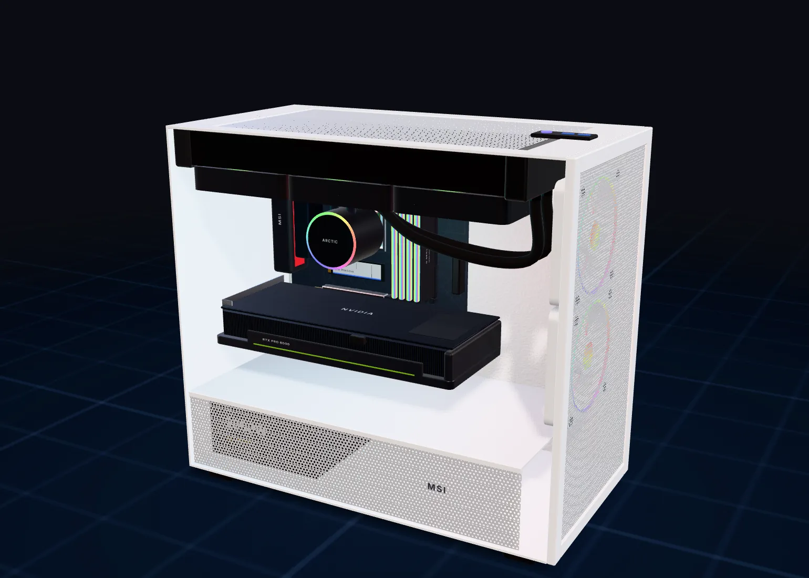
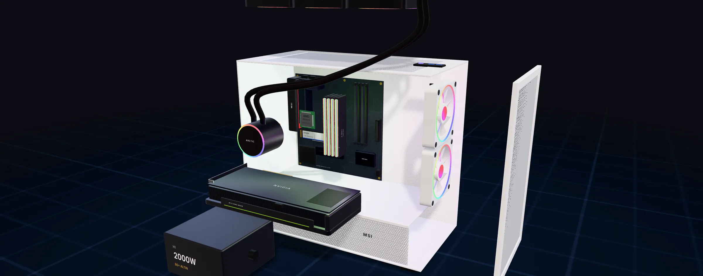
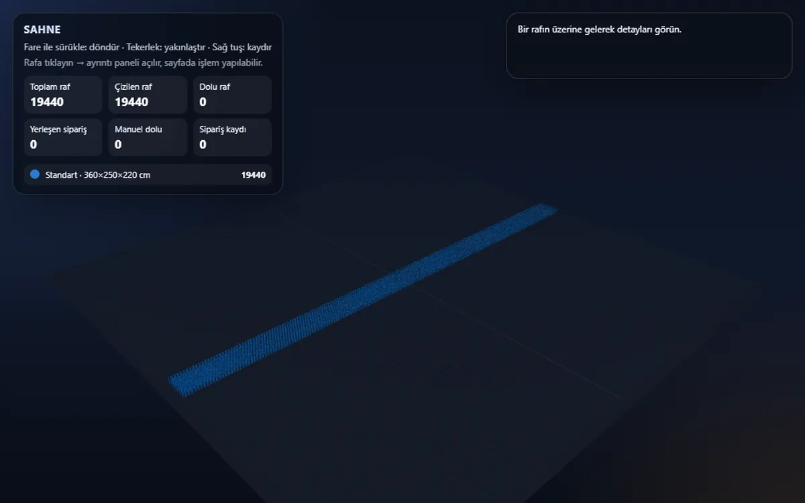
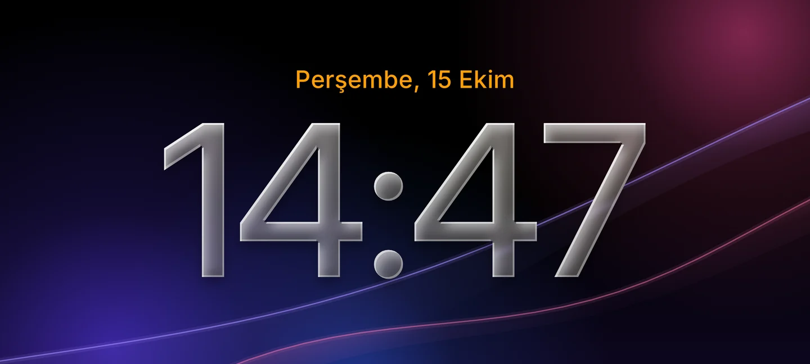
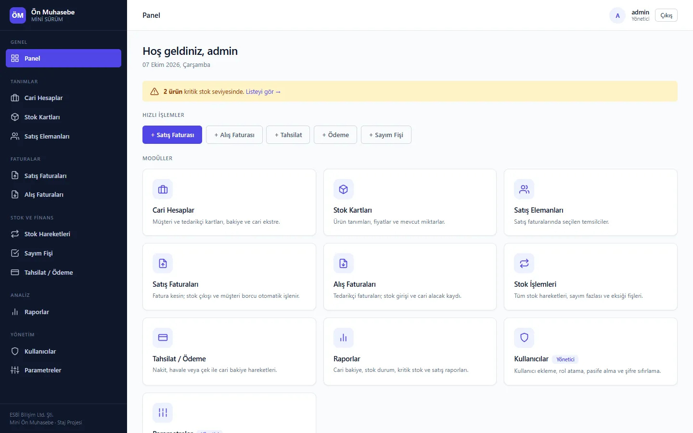
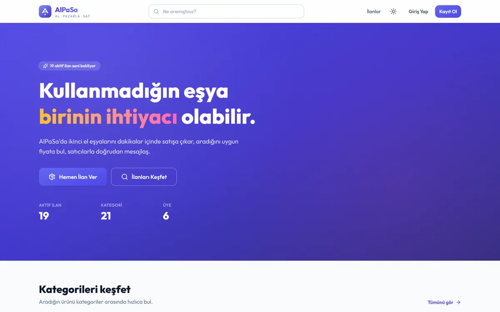
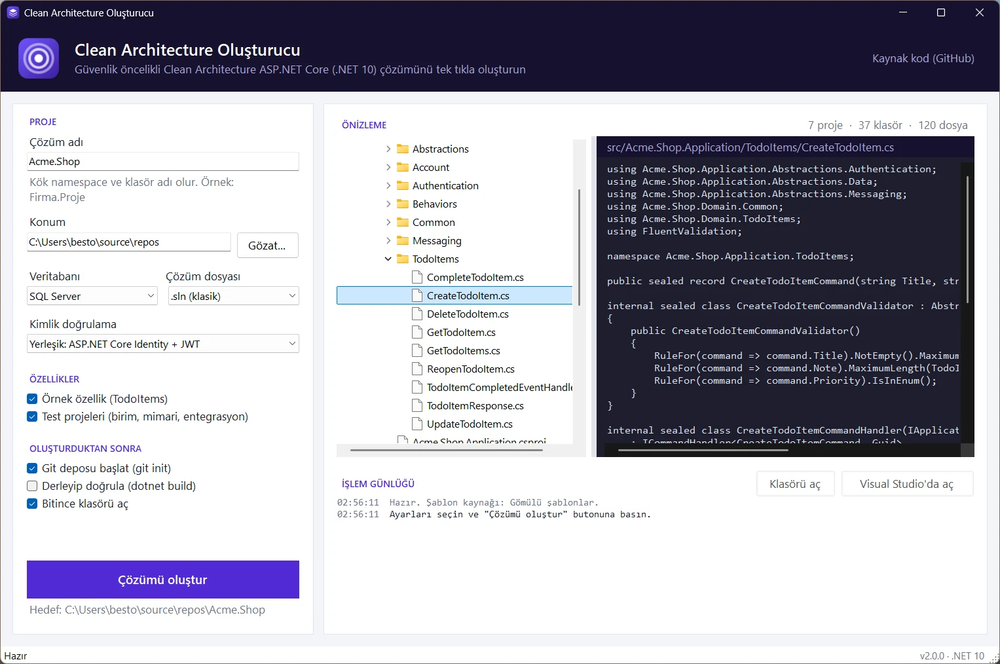
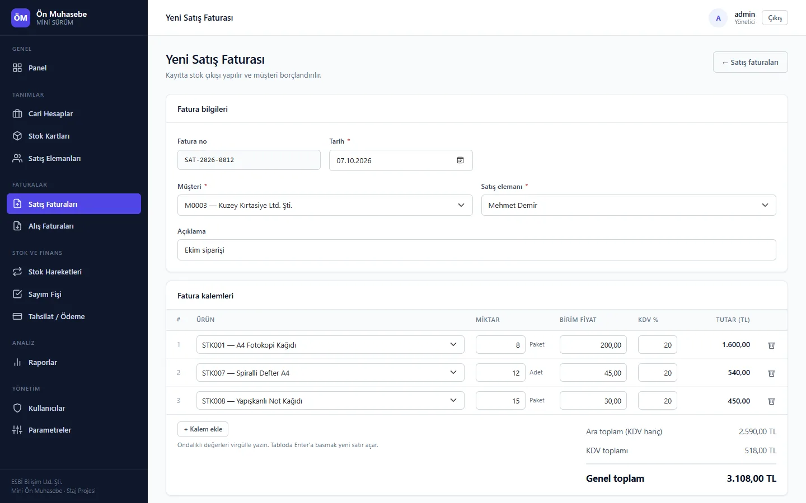

Full-stack developer in Sakarya. I build web apps, 3D tools, machine learning studies and Android apps, from the requirements to the release.
Email meSelected work

Order Placement

StandBy+

Mini Bookkeeping

AlPaSa

Clean Architecture Generator
More projects
About
I'm Yiğit Kalaycıoğlu. I study Information Systems Engineering at Sakarya University and graduate in June 2026. I have done two software internships: in the .NET team at Tırsan Treyler in the summer of 2025, contributing to the module-by-module refactoring of internal applications along Clean Architecture, and at ESBİ in the autumn of 2026, where I built a bookkeeping application from a requirements document in four weeks. Outside work I build the things I want to use: a 3D PC builder that only offers parts that fit, an Android bedside clock with a glass theme written in AGSL, a Windows service that turns the computer off with the same button that wakes it. I write the data model before the screens, keep each rule in one place and ship things you can open in a browser. If you have a role or a project in mind, write to me.
How I build
To begin, a requirements document. I write down who uses the thing, what they need and which rules must never break, before the first line of code. For the bookkeeping app the document also says what is out of scope.
Mini Ön Muhasebe Uygulaması — Staj Proje Dokümanı
3.2 Kapsam Dışı
- e-Fatura / e-Arşiv ve GİB entegrasyonu
- Resmi muhasebe (muhasebe fişi, mizan, defter, beyanname)
- Çoklu firma / dönem, çoklu para birimi, çoklu depo
Then the data. Screens come after the model. I design the relational schema, version it with migrations and calculate numbers from records instead of storing them: a balance is never saved, it is summed from the account movements.
// Bakiye hiçbir yerde saklanmaz, her zaman CariHareketler'den hesaplanır.
// Hesabın tek tanımı burasıdır; controller'lar ViewModel kurarken buradan alır.
/// Tek hareketin bakiyeye etkisi: borç artı, alacak eksi. EF Core bunu SQL'e çevirir.
public static readonly Expression<Func<CariHareket, decimal>> Etki =
h => h.Borc - h.Alacak;
public decimal Bakiye(Cari cari) => cari.CariHareketleri.Sum(EtkiFonksiyonu);After that, the boundaries. Domain, Application, Infrastructure and API stay separate, and each rule lives in exactly one place. The Clean Architecture Generator writes that structure for a new ASP.NET Core solution in one click.
Only then, the interface. Fast, plain screens in React or ASP.NET MVC, and 3D with three.js where it really helps someone understand or decide.

Finally, proof that it works. Every push runs the format check, unit tests and integration tests against a real SQL Server. Most projects end as a live demo you can open in the browser; the rest ship as releases.
# Her push ve pull request'te kod biçimi denetlenir; çözüm derlenir, migration'ların modelle uyumu kontrol edilir,
# birim testleri ve gerçek bir SQL Server üzerinde entegrasyon testleri çalıştırılır.
name: CI
jobs:
derle-ve-test:
services:
sqlserver:
image: mcr.microsoft.com/mssql/server:2025-latestExperience
Where I interned, studied and earned my certificates.
ESBİ Bilişim ve Telekomünikasyon
Software Intern · Sep 2026 – Oct 2026
- Built a web-based bookkeeping application end to end in four weeks from a requirements document, covering customer and supplier accounts, inventory, invoicing, payments and reporting.
- Designed an 11-table relational database schema and managed it with EF Core Code First migrations.
Tırsan Treyler
Software Intern, .NET team · Jun 2025 – Aug 2025
- Contributed to the module-based refactoring of internal enterprise applications along Clean Architecture principles.
- Took part in optimising database queries built on Entity Framework Core.
Sakarya University
Information Systems Engineering · Graduation: June 2026
Skills
- Languages and web
- JavaScript, TypeScript, React, Node.js, HTML, CSS, Tailwind CSS
- Backend
- C#, ASP.NET Core (MVC, Identity), Entity Framework Core, Express
- Databases and tools
- SQL Server, PostgreSQL, Redis, Git, Docker
- Data science
- Python, PyTorch, scikit-learn, pandas, Jupyter
- Also in my projects
- three.js, Streamlit, Kotlin (Android), Socket.io, systemd
Certificates
- Full-Stack Web Development (HTML, CSS, JS, Node, React, PostgreSQL)Udemy · Angela Yu
- Odoo Student DiplomaOdoo S.A.
- C# and .NET ProgrammingUdemy
- AI Professional Development Program (40 hours)Social Office / TNC Group · View certificate
Let's talk
LinkedIn github.com/yigitkalayciogluSakarya, Türkiye
Say helloFor roles, projects or just to say hello, email is the quickest way to reach me.